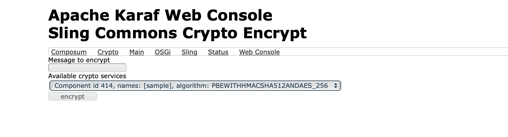

Commons Crypto
Commons Crypto provides a simple API to encrypt and decrypt messages and an extensible implementation based on Jasypt.
The Jasypt implementation and Web Console plugin are optional.
API
Crypto Service
Encrypt a secret message (e.g. service password) and decrypt the ciphertext. The used crypto method is up to the implementation.
public interface CryptoService {
String encrypt(String message);
String decrypt(String ciphertext);
}
Use a reference target to get a particular crypto service, e.g. by names (names should be meaningful e.g. mail or database).
@Reference(
target = "(names=sample)"
)
private volatile CryptoService cryptoService;
Password Provider
Password providers are useful when dealing with password-based encryption (PBE, see also RFC 2898).
public interface PasswordProvider {
char[] getPassword();
}
File Password Provider
The file-based password provider reads the password for encryption/decryption from a given file.

Jasypt implementation
The Commons Crypto module provides a crypto service implementation based on the Jasypt StandardPBEStringEncryptor.
The JasyptStandardPBEStringCryptoService requires at least a password provider and an initialization vector (IV) generator (IvGenerator) to set up the internal StandardPBEStringEncryptor.


Web Console Plugin
The plugin (/system/console/sling-commons-crypto-encrypt) allows message encryption with a selected crypto service.

Sample configurations
A module with (minimal) sample configurations can be found in Sling's samples Git repo.
org.apache.sling.commons.crypto.internal.FilePasswordProvider~sample.json
{
"jcr:primaryType": "sling:OsgiConfig",
"names": ["sample"], // names is optional
"path": "/var/sling/password"
}
org.apache.sling.commons.crypto.jasypt.internal.JasyptRandomIvGeneratorRegistrar~sample.json
{
"jcr:primaryType": "sling:OsgiConfig",
"algorithm": "SHA1PRNG"
}
org.apache.sling.commons.crypto.jasypt.internal.JasyptStandardPBEStringCryptoService~sample.json
{
"jcr:primaryType": "sling:OsgiConfig",
"names": ["sample"], // names is optional
"algorithm": "PBEWITHHMACSHA512ANDAES_256"
}